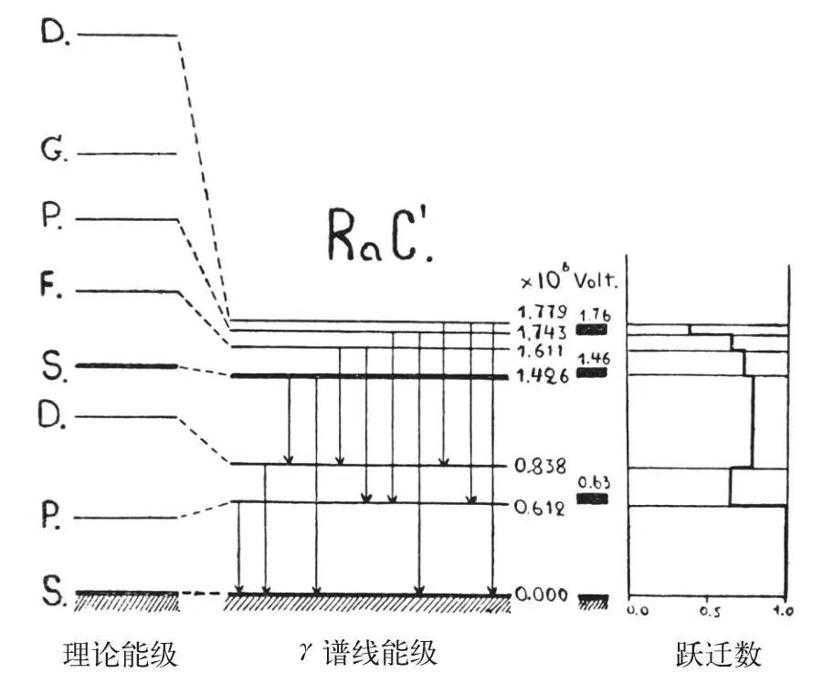
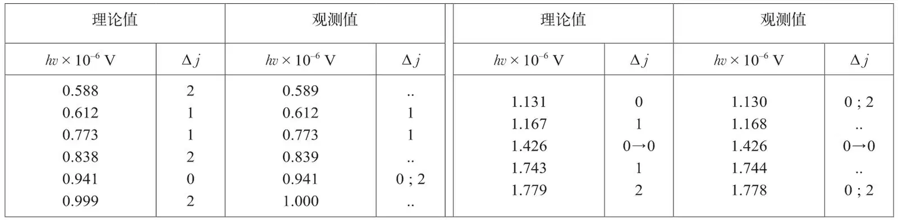

英文
英文乔治·伽莫夫
编者按
虽然物理学家们对核结构还缺乏明确的认识，比如很多人仍然认为电子可能存在于原子核当中，但实践证明量子理论是可以用于解释核谱的。正如乔治·伽莫夫在文中所述：可以假设原子核中的各个成分被未知的力束缚在一口无限深的方井中，这样的假设是有益的：量子理论可以通过对这个模型的计算得到不同角动量状态的能量。伽莫夫指出：在该理论预测的21个跃迁中有11个接近于从镭C'同位素光谱中得到的数据。接下来的研究方向可能是：对方井模型进行怎样的调整才能使该理论更为精确。 英文
我们似乎可以合理地假设作用于核内粒子上的力在核的内部区域相当弱，随着接近核的边界而迅速增大，势能的分布可以用一个近似平底深壁的孔来表示[1]。如果我们在模型中使用的是一个壁高为无限大的矩形孔，就可以由贝塞尔函数的根得到运动粒子的能级，计算方法非常简单。然而对于实际上的模型，由于壁并不是很陡，也不是无限高，因此理论能级系统会发生变化，能级系统的上部会被压缩。 英文
镭C'的核最适于验证这个假说，因为我们有很多关于这种核的实验证据。卢瑟福通过对长程α粒子（9组）的测量为我们提供了镭C'核能级的近似位置[2]。埃利斯[3]的研究给出了许多γ谱线（9条谱线）的绝对强度以及内转换系数的值，后者为我们提供了非常重要的信息，正如泰勒和莫特曾经说过的那样[4]，内转换系数值是我们分辨四极跃迁和偶极跃迁的依据。 英文
我们用这些数据足以构建镭C'核的能级系统，能级的主体部分示于图1，图中还标出了理论值。 英文

图1 英文
我们很快发现并不是每一个能级都对应于某个长程α粒子组；然而，这有可能是由于大j能级的α衰变概率很小的缘故，因为离心力会产生附加势垒（如果能量相同，一个α粒子从S能级逃逸的概率分别是从P、D、F、G能级逃逸的概率的1.3、4、16和105倍）。观测到的跃迁列于下表中。 英文

从数学的角度上看共有21种可能的跃迁，实际上只发现了其中的11种，如上表所示，能量值与理论预测相符并遵从不相容原理。至于剩下的10条谱线，其中2条F→S跃迁并不是预期应当有的谱线，另外4条处于研究范围之外的谱区，还有4条可能因强度太小而未被观测到。另一件有意思的事情是，我们可以通过构建跃迁图来计算穿过某个给定能级间隔的所有谱线强度之和。从这张图中我们发现了一条现在还未知的γ线，这条0.226×106 V的γ线的绝对强度大约为0.2。 英文
理论与实际能级系统的相似性证实了我们对核内部势能的预测，而根据理论和实测能级系统之间的偏差，我们一定能计算出实际的势能分布。 英文
（沈乃澂 翻译；尚仁成 审稿）